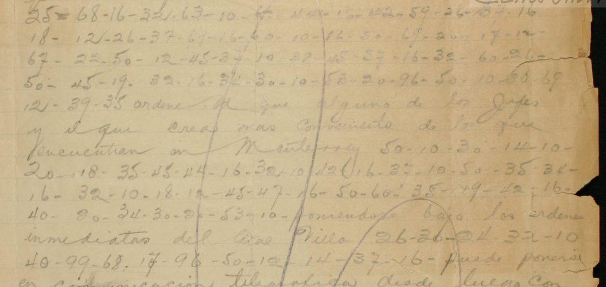

At a glanceKey from adjacent plaintext · partial (85% of the cipher)
- The sheet
- One pencil sheet, undated: “El Capitán Ayudante, A. H. Castañeda” transcribes to “Gral. P. González” a message signed “V. Carranza” and “fechado ayer en S[…]”. The right half is faint and a large loop and a vertical line are drawn across the text. Clear Spanish with eight runs of two-figure groups (235 groups).
- Where
- CEHM-Carso, Mexico City, Fondo LXVIII-1 (papers of Gen. Pablo González), LXVIII-1.23.3165.1, one scan. Part of catalogue entry 1465; its other items are read on their own pages or not yet read. A different fonds from the Carranza telegrams of 1915 (another page).
- The cipher
- Clave Extra 3: two-figure groups from 10 to 99 in a table in which each letter has two groups, and word groups such as 96 de, 99 que, 82 enemigo, 87 para. The table is the one the Murguía target (
targets/murguia1914) rebuilt from a contemporary pencil decipherment of another sheet of the fonds. - How it was read
- That key, frozen before this sheet was decrypted (by the contributor’s record), was applied unchanged: every fully read group has a value and the result is Spanish with names (Saltillo, Villa, Coss, Eulalio Gutiérrez, San Luis). Nothing on this sheet was used to build the key.
- What it says
- Forces of “esta División” are to move on Saltillo; González is to send one of the chiefs at Monterrey under General Villa’s immediate orders; General Coss is to take up position south of Saltillo, on the enemy’s line of retreat, in concert with General Eulalio Gutiérrez.
- Still open
- Nine of the 61 coded words count as not read: 7 hold a guessed letter or word for a group whose figures are not legible, 2 a marked repair. The clear head of the message is partly faint. The date, probably May 1914, is an inference from the orders, not on the sheet.
- Credit
- Transcription, application of the key and reading by WAINUT with AI language-model agents from the CEHM images; no human palaeographer checked the text. The project re-ran the scripts, wrote its own decoder and compared the scan.
01 The sheet
The sheet is a transcription: an aide, Captain A. H. Castañeda, copies for General Pablo González a message that he says is signed by V. Carranza (presumably Venustiano Carranza, the First Chief; not checked here) and dated “yesterday” at a place beginning with S. It is written in pencil, mostly in clear Spanish with eight runs of two-figure groups; the right half is faint. The orders it gives, to move on Saltillo, to send a chief from Monterrey to serve under Villa and to put Coss south of Saltillo, fit the Constitutionalist operation against Saltillo of May 1914; that dating is the contributor’s inference, and the sheet itself carries no date.

02 The key
Clave Extra 3 is named on another sheet of the same fonds, LXVIII-1.14.1943.1 (a letter of Francisco Murguía to González of March 1914), whose typed copy carries a contemporary pencil decipherment. The table was rebuilt from that decipherment in the Murguía target and tested there on a held-out page (0.842 letter agreement; shuffled keys at most 0.154); that test belongs to the Murguía target and was not repeated here. The file used here, key_frozen.tsv, is that key with 60 values, copied unchanged; the integration check found it identical line for line with the Murguía copy, and with the one used for the note of Fuentes to González (its own page). One key, one entry: the key belongs to the Murguía target, and the two sheets are documents read with it.
The key was frozen on another sheet and never adjusted to this one. Every group of the sheet that could be read has a value, and the decryption is military orders with names that no fitting could have supplied. The contributor’s statistical check (a score per letter of −2.317 against −6.14 on average for 200 random keys, best −4.72; z 7.3) passes. The order in which the key was frozen and this sheet decrypted rests on the contributor’s record (a single commit, no external timestamp).
03 The reading
[Monterrey]. Hónrome transcribirle siguiente mensaje fechado ayer en S[…] con esta fecha: FUERZAS P[?E:1?]RTE[?N:??]ECIENTES A ESTA DIVISIÓN A [?M:3?]OVERSE SOBRE PLAZA DE SALTILLO. Ordene Ud. que alguno de los jefes, y el que crea más conveniente de los que se encuentran en Monterrey, SALGA A COOPERAR EN {+L}AS OPERACIONES SOBRE LA PLAZA, poniéndose bajo las órdenes inmediatas del Gral. Villa. EL GRAL. QUE UD. DESIGNE puede ponerse en comunicación telegráfica desde luego con citado Gral. Villa. ORDENE UD. A GRAL. COSS QUE CON las fuerzas de su mando SE ESTABLEZCA AL SUR DE SALTILLO, línea obligada DE RETIRADA DEL ENEMIGO, PARA [?QUE:?9] LO ATAQUE C{F/O}N VENTAJA [?A:1?]L retirarse éste de la plaza, como no teniendo más misión que ésta, obrando en combinación CON GRAL. EU[?L:3?]ALIO GUTIÉRREZ, QUE S[?E:1?] encuentra sobre la línea DE SALTILLO A SAN LU[?I:1?]S, A quien doy órdenes en el mismo sentido.
In English: “I have the honour to transcribe to you the following message dated yesterday at S[…], of today’s date: Forces belonging to this Division [are] to move on the place of Saltillo. Order one of the chiefs, the one you think most suitable among those who are at Monterrey, to go out and cooperate in the operations against the place, putting himself under the immediate orders of General Villa. The general you appoint may put himself in telegraphic communication at once with the said General Villa. Order General Coss to take up position with the forces under his command south of Saltillo, the line the enemy must take in retreat, so that he attacks him with advantage when he withdraws from the place, having no other task than this, acting in concert with General Eulalio Gutiérrez, who is on the line from Saltillo to San Luis, to whom I give orders to the same effect.” Capitals are the coded words; braces mark a repair, brackets a guess for a group whose figures are not legible.
Counted by the README rule, strictly, the eight runs hold 61 coded words: 52 verbatim from the signs, 2 with a marked repair ({+l}as, a letter the encipherer left out; c{f/o}n, where the sheet shows 25, f, and the sense needs 45, o), and 7 with a guess for a group whose figures are not legible: five are one letter each (m in moverse, a in al, l in Eulalio, e in se, i in Luis), one is two letters of pertenecientes, and one is the whole word que after para (the group looks like an open 99, which is que). So 52 of 61, 85.2%, under the 95% bar: read in part. The contributor’s own count is the same. An AI reader who did not make the work graded the reading B: coherent orders, each guess forced by the word around it. The coded “a esta División a moverse” has no governing verb in what is read of the faint clear head, and none is supplied.
04 What remains uncertain
- Eight groups with an unread figure (C01 groups 9, 13 and 36; C06 groups 14 and 31; C07 groups 10 and 25; C08 group 15) lie in faint pencil or under the drawn loop; the reading guesses a value for each and marks it (illegible).
- The clear head of the message (“fechado ayer en S[…]”) is partly faint and not fully read (illegible).
- The date. The sheet gives none; May 1914 is inferred from the orders on Saltillo. That Carranza signed the message is as the aide writes it.
- The key’s own held-out test, and the pencil decipherment it comes from, belong to the Murguía target and were not checked on that sheet here. No edition or decipherment of this sheet was found by the contributor’s web searches (repeated once by a reviewer); the 2019 and 2025 articles by Narváez on Constitutionalist cryptography and M. W. González, Con Carranza, were not read, so a printed reading cannot be ruled out.
Full texts
The transcription and the decryption of every document on this page, so that the reading can be used and checked. Short files are shown here; all are in the repository.
Carranza message on Villa and Saltillo, [probably May 1914] read in part
Forces of 'esta División' are to move on Saltillo; González is to send one of the chiefs at Monterrey to cooperate in the operations under the immediate orders of General Villa; General Coss is to stand south of Saltillo on the enemy's line of retreat and attack him as he leaves, in concert with General Eulalio Gutiérrez on the Saltillo-San Luis line. The date (probably May 1914) is inferred.
Builds coherent sentences, but under the read bar of 95% of words read as sense (85% here); the holes are marked in the reading.
Transcription
transcription_LXVIII-1.23.3165.1.txt
# CEHM LXVIII-1.23.3165.1, [Monterrey], Capt. A. H. Castañeda (ayudante) to Gral. P. González, transcribing a message signed V. Carranza; undated. Pencil, faint right half, a large pencil loop drawn across the text. # Reconciled transcription. Unsettled figures stay as '?'; double readings settled on the enlarged crops as noted. # C02 g14: the figure before 16-37 shows as 42 on pass 2 (pass 1 12): kept 42. g32: 1 with a hook, read 19. # g36, g39: open loop on top, read 20 (pass 1 80); both shapes stand in the same line as clear 0s. # C04 g13: first figure crossed by the vertical pencil line; read 1 (18). # C05 g10: 2 over-written by 3; the top figure is 3 (53). # C06 g13: 87 (the tail of the 7 runs into the line); g14: first figure an open loop (0 or 9 or 6), left as ?9; # g15: 30; g31: second figure hidden by the loop line, left as 1?. # C08 g9: first figure faint, read 1 (10). C01 Honrome transcribirle siguiente mensaje fechado ayer en S[...] con esta fecha | 25-68-16-32-63-10-60-44-1?-42-59-26-??-16-18-12-26-37-69-16-60-10-16-50-69-20-17-12-67-22-50-12-45-37-10-3?-45-57-16-32-60-26-50-45-19-32-16-34-30-10-53-20-96-50-10-30-69-12-39-35 | ordene C02 los que se encuentran en Monterrey | 50-10-30-14-10-20-18-35-45-44-16-32-10-42-16-37-10-50-35-34-16-32-10-18-12-45-47-16-50-60-35-19-42-16-40-20-34-30-20-53-10 | poniendose bajo las ordenes inmediatas del Gral. Villa C03 del Gral. Villa | 26-30-24-32-10-40-99-68-17-96-50-12-14-37-16 | puede ponerse en comunicacion telegrafica desde luego con citado Gral. Villa C04 con citado Gral. Villa | 35-42-96-37-16-68-27-10-24-32-10-40-18-45-50-60-99-18-45-37 | las fuerzas de su mando C05 las fuerzas de su mando | 50-16-26-50-69-20-29-30-16-53-18-10-20-30-50-58-32-96-50-10-30-69-22-39-45 | linea obligada C06 linea obligada | 96-32-16-59-12-32-10-17-10-96-30-82-87-?9-30-45-10-59-20-99-18-25-47-67-26-47-69-10-21-20-1?-30 | retirarse este de la plaza como no teniendo mas mision que esta obrando en combinacion C07 en combinacion | 18-35-47-24-32-10-30-26-68-3?-10-40-12-45-24-68-69-12-16-41-16-53-99-60-1? | encuentra sobre la linea C08 sobre la linea | 96-50-10-30-59-12-39-45-10-50-20-37-30-68-1?-60-10 | quien doy ordenes en el mismo sentido
Decryption
decryption_LXVIII-1.23.3165.1.txt
# Mechanical decryption with key_frozen.tsv (scripts/decrypt.py); capitals = word codes; [NN] = unread or unidentified group C01 fuerzasp[1?]rte[??]ecientesaestadivisiona[3?]oversesobreplazadesaltillo # 60 groups, 3 unread/unidentified C02 salgaacooperarenasoperacionessobrelaplaza # 41 groups, 0 unread/unidentified C03 elgralQUEuddesigne # 15 groups, 0 unread/unidentified C04 ordeneudagralcossQUEcon # 20 groups, 0 unread/unidentified C05 seestablezcaalsurdesaltillo # 25 groups, 0 unread/unidentified C06 deretiradadelENEMIGOPARA[?9]loataQUEcfnventaja[1?]l # 32 groups, 2 unread/unidentified C07 congraleu[3?]aliogutierrezQUEs[1?] # 25 groups, 2 unread/unidentified C08 desaltilloasanlu[1?]sa # 17 groups, 1 unread/unidentified
Reading
# Reading of Carranza's orders to Pablo González on Villa and Saltillo, [May 1914] (CEHM LXVIII-1.23.3165.1)
Pencil sheet: Capt. A. H. Castañeda, aide, transcribes to "Gral. P. González" a message signed V. Carranza. Clear text as written; the right half is faint and some clear words are read with doubt. Coded text in capitals, decrypted with `key_frozen.tsv` (Clave Extra 3, built from LXVIII-1.14.1943.1). Marks: `{x/y}` the key gives x, the reading takes y; `{+a}` a letter the encipherer left out; `[?w:NN]` a guess for a group whose figures are not legible.
> Hónrome transcribirle siguiente mensaje fechado ayer en S[...] con esta fecha: FUERZAS P[?E:1?]RTE[?N:??]ECIENTES A ESTA DIVISIÓN A [?M:3?]OVERSE SOBRE PLAZA DE SALTILLO.
>
> Ordene Ud. que alguno de los jefes, y el que crea más conveniente de los que se encuentran en Monterrey, SALGA A COOPERAR EN {+L}AS OPERACIONES SOBRE LA PLAZA, poniéndose bajo las órdenes inmediatas del Gral. Villa. EL GRAL. QUE UD. DESIGNE puede ponerse en comunicación telegráfica desde luego con citado Gral. Villa.
>
> ORDENE UD. A GRAL. COSS QUE CON las fuerzas de su mando SE ESTABLEZCA AL SUR DE SALTILLO, línea obligada DE RETIRADA DEL ENEMIGO, PARA [?QUE:?9] LO ATAQUE C{F/O}N VENTAJA [?A:1?]L retirarse éste de la plaza, como no teniendo más misión que ésta, obrando en combinación CON GRAL. EU[?L:3?]ALIO GUTIÉRREZ, QUE S[?E:1?] encuentra sobre la línea DE SALTILLO A SAN LU[?I:1?]S, A quien doy órdenes en el mismo sentido.
>
> Salúdolo afectuosamente. V. Carranza. Respte. El Capitán Ayudante, A. H. Castañeda.
The coded "a esta División a moverse" has no governing verb in what is read of the clear head of the message, whose words are faint ("[he ordenado?]" is not supplied).
## Coded runs (checked by scripts/check_marks.py)
C01 | fuerzas p[?e:1?]rte[?n:??]ecientes a esta división a [?m:3?]overse sobre plaza de saltillo
C02 | salga a cooperar en {+l}as operaciones sobre la plaza
C03 | el gral que ud designe
C04 | ordene ud a gral coss que con
C05 | se establezca al sur de saltillo
C06 | de retirada del enemigo para [?que:?9] lo ataque c{f/o}n ventaja [?a:1?]l
C07 | con gral eu[?l:3?]alio gutiérrez que s[?e:1?]
C08 | de saltillo a san lu[?i:1?]s aTranslation
translation_LXVIII-1.23.3165.1.md
# Translation: Carranza's orders to Pablo González on Villa and Saltillo, [May 1914] (CEHM LXVIII-1.23.3165.1) Coded parts in capitals, with the same holes as the Spanish reading. Letters supplied for illegible figures are in brackets. > I have the honour to transcribe to you the following message dated yesterday at S[...], of today's date: FORCES BELONGING TO THIS DIVISION [ARE] TO MOVE ON THE PLACE OF SALTILLO. > > Order one of the chiefs, the one you think most suitable among those who are at Monterrey, TO GO OUT AND COOPERATE IN THE OPERATIONS AGAINST THE PLACE, putting himself under the immediate orders of General Villa. THE GENERAL YOU APPOINT may put himself in telegraphic communication at once with the said General Villa. > > ORDER GENERAL COSS TO take up position WITH the forces under his command SOUTH OF SALTILLO, the line THE ENEMY MUST TAKE IN RETREAT, SO THAT HE ATTACKS HIM WITH ADVANTAGE WHEN he withdraws from the place, having no other task than this, acting in concert WITH GENERAL EULALIO GUTIÉRREZ, WHO is on the line FROM SALTILLO TO SAN LUIS, TO whom I give orders to the same effect. > > I greet you affectionately. V. Carranza. Respectfully, the Captain Aide, A. H. Castañeda.
Key: key_frozen.tsv
05 Sources
- CEHM-Carso (Centro de Estudios de Historia de México, Fundación Carlos Slim), Fondo LXVIII-1: LXVIII-1.23.3165.1, image 0001 (direct JPG from the CEHM viewer, fetched 12 and 13 November 2026; the viewer refused nothing). Viewer: LXVIII-1.23.3165.1.
- The key: the contemporary pencil decipherment on LXVIII-1.14.1943.1, pp. 3–4, rebuilt in
targets/murguia1914. - Transcription, key application, readings and scripts by WAINUT (pull request #515), in
targets/carranza1914.
The key, the transcription, the readings and the checks are in targets/carranza1914.
Cite this page
WAINUT and Daniel Bourdeau, “V. Carranza’s orders to Pablo González on Villa and Saltillo, [May 1914]”, Cyphersolver, posted 13 November 2026, https://cyphersolver.com/carranza1914.html.